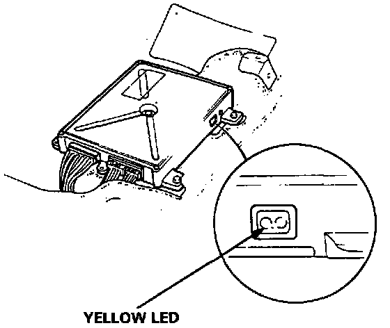
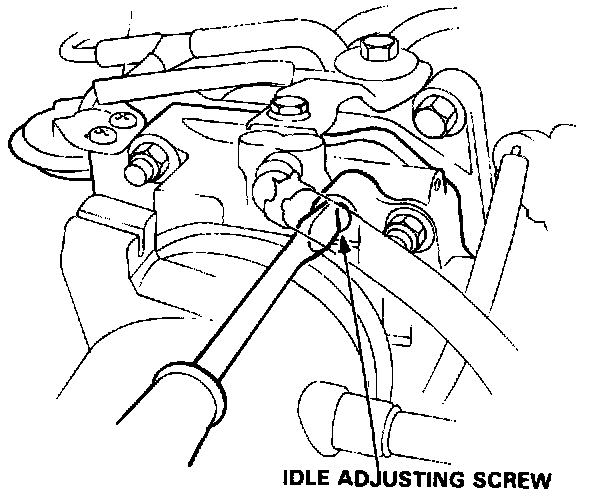

Sedan
Idle Speed Inspection / Adjustment1. Start the engine and warm it up to normal operating temperature (the cooling fan comes on).
2. Connect a tachometer.
3. Set the steering in the straight forward condition, and check idling in no-load conditions in which the headlights, blower fan, rear defroster, cooling fan, and air conditioner are not operating. (All accessories turned off.)
Idle speed should be:
Manual ... 680 ± 50 rpm
Automatic ... 680 ± 50 rpm in [N] or [P]

4. Check the Yellow LED display at the ECU under the passenger's seat.

- If Yellow LED is off
Do not adjust idle adjusting screw.
- If Yellow LED is blinking
Adjust idle adjusting screw 1/4 turn clockwise.
- If Yellow LED is on
Adjust idle adjusting screw 1/4 turn counter-clockwise,
NOTE: On a new engine (less than 310 miles or 500 km) the Yellow LED may light even though the idle adjusting screw is properly set. However, no adjustment should be made.
- Check that the Yellow LED goes off after approximately 30 seconds.
If it does not go off, rotate the idle adjusting screw by 1/4 turn in the same direction, and repeat the same operation until the Yellow LED goes off.
5. Check the idle speed in the following conditions.
- With headlights (Hi) and rear window defogger ON.
- While the steering wheel is turning.
- With air conditioner compressor on.
- If, applicable, with Automatic transmission model when shifted in gear (except (N) or (P)).
Idle should remain stable at: 680 ± 50 rpm